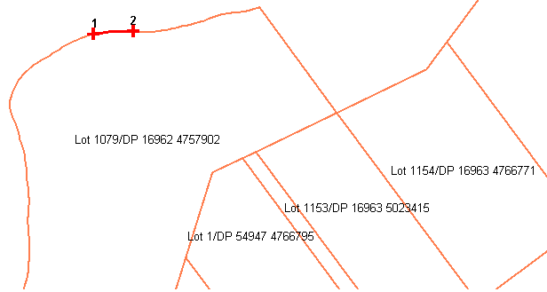
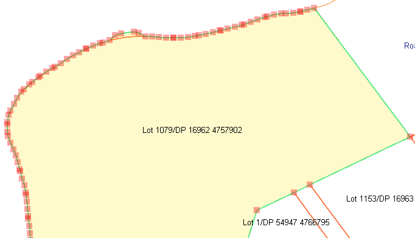

Изменение границ
Вы можете изменить границу как нового участка (через услугу изменения кадастра), так и существующего кадастрового объекта (через услугу изменения кадастрового объекта).
На самом деле данная функция изменяет полностью границу участка, вместо изменения отдельных его точек.
Увеличьте карту до масштабов участка который будет изменен и выберите границу для изменения при помощи инструмента "Выбор границы для изменения"
 .
.
-
Выделите начальную точку границы для изменения (это может быть существующая точка или новая).
-
Выделите конечную точку (по часовой стрелки) границы для изменения (это может быть существующая точка или новая).
Эти точки будут отображены на карте как зеленые крестики, расположенные на границе.
Сегмент границы, который будет изменен будет отображен красной линией между начальной и конечной точками.

Теперь выберите инструмент "Изменить выбранную границу" 
- Щелкните на начальную точку границы, которая будет изменена.
- Щелкните последовательно в тех местах, где предполагается нанести новую границу
- В конце, дважды щелкните на конечной точке для завершения изменения границы.
Новая граница участка будет отображена зеленым цветом, в то время как старая будет оставаться красной.
Таким образом можно наглядно сравнить произведенные изменения. Данные изменения будут оставаться временными до момента одобрения заявления.

Вы можете изменять границу столько раз, сколько этого требуется. Вы также можете отметить все изменения и начать заново нажав кнопку
"Перезапустить процесс кадастрового переопределения".
Добавление изображения для изменения кадастра и/или кадастрового объекта
Вы можете добавить изображение на карту из локального файла на вашем диске при помощи инструмента "Добавить изображение на карту"
 .
Данная функция предполагается к использованию для маленьких изображений, в целях ориентации на карте
(например для нанесения границы участка без загрузки спутниковых снимков).
.
Данная функция предполагается к использованию для маленьких изображений, в целях ориентации на карте
(например для нанесения границы участка без загрузки спутниковых снимков).
- Выберите инструмент "Добавить изображение на карту"
- Щелкните на карте для определения вставки левого нижнего угла изображения.
- Щелкните на карте для определения вставки правого верхнего угла изображения.
- Выберите картинку в появившемся окне (допустимые форматы: jpg, jpeg, png, tif).
- Щелкните на изображении для определения левого нижнего угла, который будет привязан к точке на карте, определенной ранее (шаг 2).
- Щелкните на изображении для определения правого верхнего угла, который будет привязан к точке на карте, определенной ранее (шаг 3).
- Нажмите OK
После этих действий картинка будет вставлена по указанным точкам, без какой-либо надобности в гео-привязке.
Вы можете удалить изображение с карты при помощи инструмента "Удалить добавленное изображение" 
Также в списке слоев, вы можете отключить или включить слой "Временное изображение", на который добавляются изображения.
Смотрите также: